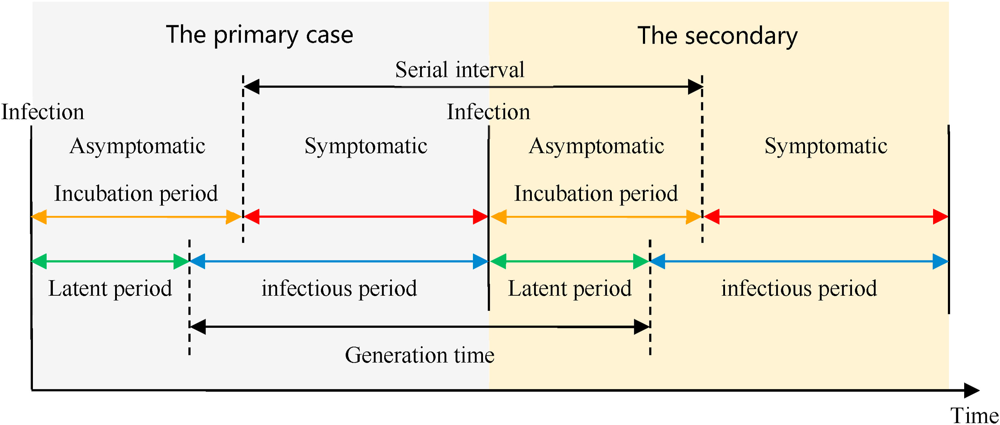
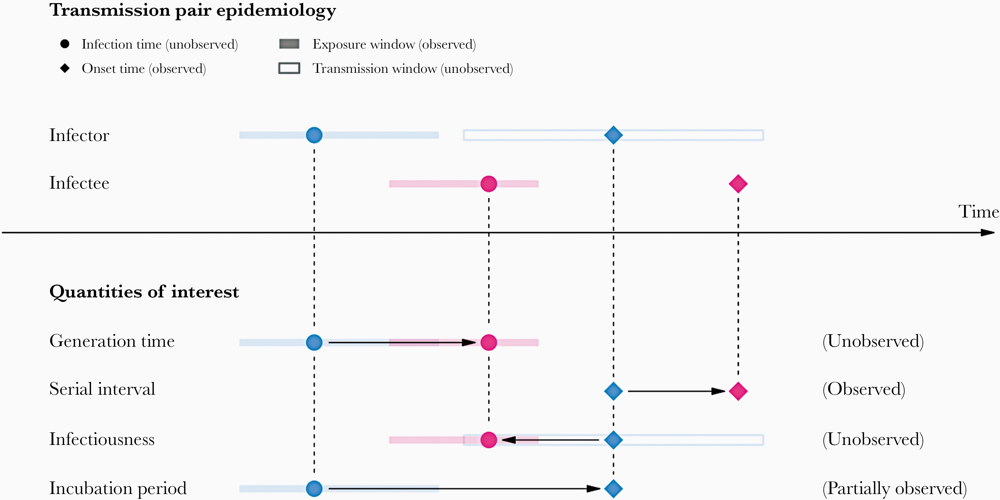
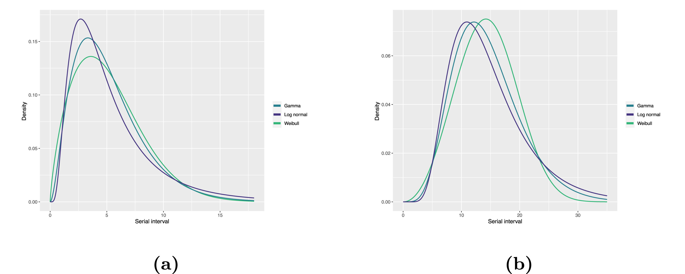
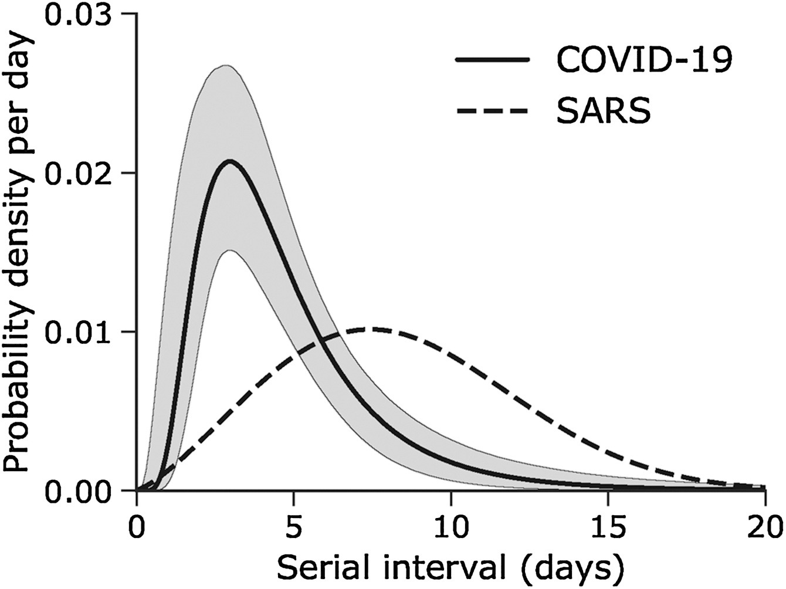
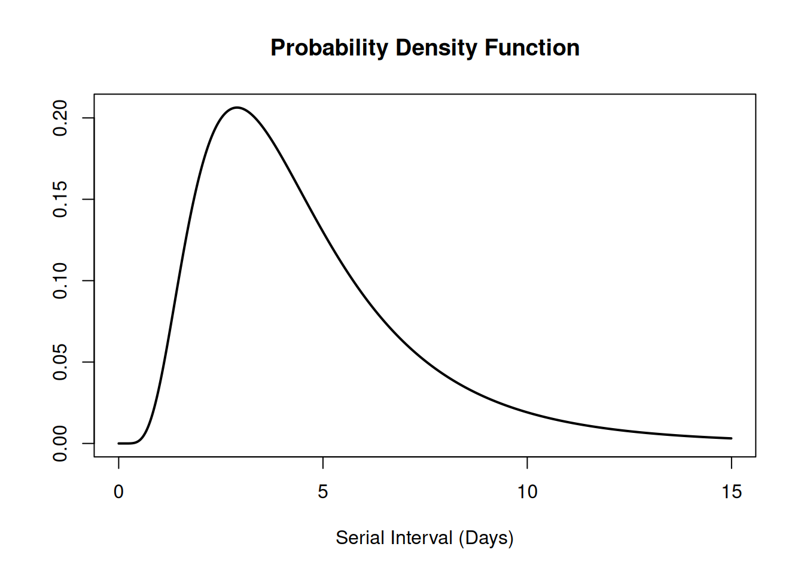

library(epiparameter)
library(tidyverse)Acessar distribuições de atraso epidemiológicas
NotaPerguntas
- Como obter acesso a distribuições de atraso de doenças a partir de uma base de dados pré-estabelecida para uso em análises?
DicaObjetivos
- Obter atrasos a partir de uma base de dados de busca na literatura com o
{epiparameter}. - Obter parâmetros de distribuição e estatísticas resumo de distribuições de atraso.
ImportantePré-requisitos
Pré-requisitos
Este episódio requer que você tenha familiaridade com:
Ciência de dados : Programação básica com R.
Teoria epidêmica : parâmetros epidemiológicos, períodos temporais de doenças, como período de incubação, tempo de geração e intervalo serial.
Introdução
As doenças infecciosas seguem um ciclo de infecção, que geralmente inclui as seguintes fases: período pré-sintomático, período sintomático e período de recuperação, conforme descrito por sua história natural. Esses períodos de tempo podem ser usados para compreender a dinâmica de transmissão e orientar intervenções de prevenção e controle de doenças.

NotaDefinições
Consulte o glossário para as definições de todos os períodos de tempo da figura acima!
No entanto, no início de uma epidemia, os esforços para compreender a epidemia e as implicações para o controle podem ser atrasados pela falta de uma maneira fácil de acessar parâmetros-chave para a doença de interesse (Nash et al., 2023). Projetos como {epiparameter} e epireview estão construindo catálogos online seguindo protocolos de síntese da literatura que podem ajudar a orientar análises e parametrizar modelos, fornecendo uma biblioteca de parâmetros epidemiológicos previamente estimados de surtos passados.
ImportantePara o instrutor
Modelos iniciais para a COVID-19 usaram parâmetros de outros coronavírus. https://www.thelancet.com/article/S1473-3099(20)30144-4/fulltext
Para ilustrar como usar o pacote R {epiparameter} no seu pipeline de análise, nosso objetivo neste episódio será acessar um conjunto específico de parâmetros epidemiológicos da literatura, em vez de extraí-los de artigos e copiar e colar manualmente. Em seguida, vamos conectá-los a um fluxo de trabalho de análise do {EpiNow2}.
Vamos começar carregando o pacote {epiparameter}. Usaremos o pipe %>% para conectar algumas de suas funções e algumas funções do {tibble} e do {dplyr}, então vamos carregar também o pacote {tidyverse}:
NotaChecklist
O operador de dois-pontos duplos
O operador de dois-pontos duplos :: no R permite que você chame uma função específica de um pacote sem carregar o pacote inteiro no ambiente atual.
Por exemplo, dplyr::filter(data, condition) usa filter() do pacote {dplyr}.
Isso nos ajuda a lembrar as funções dos pacotes e a evitar conflitos de namespace.
O problema
Se quisermos estimar a transmissibilidade de uma infecção, é comum usar um pacote como o {EpiEstim} ou o {EpiNow2}.
O pacote
{EpiEstim}permite a estimativa em tempo real do número de reprodução usando dados de casos ao longo do tempo, refletindo como a transmissão varia com base em quando os sintomas surgem.Para estimar a transmissão com base em quando as pessoas foram de fato infectadas (em vez do início dos sintomas), o pacote
{EpiNow2}estende essa ideia combinando-a com um modelo que leva em conta delays nos dados observados.
Ambos os pacotes exigem algumas informações epidemiológicas como entrada. Por exemplo, no {EpiNow2} podemos usar EpiNow2::Gamma() para especificar um tempo de geração como uma distribuição de probabilidade Gamma adicionando sua média (mean), desvio padrão (sd) e valor máximo (max).
Para especificar um generation_time que segue uma distribuição Gamma com média \(\mu = 4\), desvio padrão \(\sigma = 2\) e um valor máximo de 20, escrevemos:
generation_time <-
EpiNow2::Gamma(
mean = 4,
sd = 2,
max = 20
)É uma prática comum entre analistas pesquisar manualmente a literatura disponível e copiar e colar as estatísticas resumo ou os parâmetros da distribuição de publicações científicas. Um desafio frequentemente enfrentado é que a apresentação de diferentes distribuições estatísticas não é consistente na literatura (por exemplo, um artigo pode relatar apenas a média, em vez de toda a distribuição subjacente). O objetivo do {epiparameter} é facilitar o acesso a estimativas confiáveis de parâmetros de distribuição para diversas doenças infecciosas, para que possam ser facilmente implementadas em pipelines de análise de surtos.
Neste episódio, vamos acessar as estatísticas resumo de um tempo de geração para COVID-19 a partir da biblioteca de parâmetros epidemiológicos fornecida pelo {epiparameter}. Essas métricas podem ser usadas para estimar a transmissibilidade dessa doença usando o {EpiNow2} nos episódios seguintes.
Vamos começar verificando quantas entradas estão atualmente disponíveis na base de dados de distribuições epidemiológicas do {epiparameter} usando epiparameter_db() para a distribuição epidemiológica epi_name chamada tempo de geração com a string "generation":
epiparameter::epiparameter_db(
epi_name = "generation"
)Returning 3 results that match the criteria (2 are parameterised).
Use subset to filter by entry variables or single_epiparameter to return a single entry.
To retrieve the citation for each use the 'get_citation' function# List of 3 <epiparameter> objects
Number of diseases: 2
❯ Chikungunya ❯ Influenza
Number of epi parameters: 1
❯ generation time
[[1]]
Disease: Influenza
Pathogen: Influenza-A-H1N1
Epi Parameter: generation time
Study: Lessler J, Reich N, Cummings D, New York City Department of Health and
Mental Hygiene Swine Influenza Investigation Team (2009). "Outbreak of
2009 Pandemic Influenza A (H1N1) at a New York City School." _The New
England Journal of Medicine_. doi:10.1056/NEJMoa0906089
<https://doi.org/10.1056/NEJMoa0906089>.
Distribution: weibull (days)
Parameters:
shape: 2.360
scale: 3.180
[[2]]
Disease: Chikungunya
Pathogen: Chikungunya Virus
Epi Parameter: generation time
Study: Salje H, Cauchemez S, Alera M, Rodriguez-Barraquer I, Thaisomboonsuk B,
Srikiatkhachorn A, Lago C, Villa D, Klungthong C, Tac-An I, Fernandez
S, Velasco J, Roque Jr V, Nisalak A, Macareo L, Levy J, Cummings D,
Yoon I (2015). "Reconstruction of 60 Years of Chikungunya Epidemiology
in the Philippines Demonstrates Episodic and Focal Transmission." _The
Journal of Infectious Diseases_. doi:10.1093/infdis/jiv470
<https://doi.org/10.1093/infdis/jiv470>.
Parameters: <no parameters>
Mean: 14 (days)
[[3]]
Disease: Chikungunya
Pathogen: Chikungunya Virus
Epi Parameter: generation time
Study: Guzzetta G, Vairo F, Mammone A, Lanini S, Poletti P, Manica M, Rosa R,
Caputo B, Solimini A, della Torre A, Scognamiglio P, Zumla A, Ippolito
G, Merler S (2020). "Spatial modes for transmission of chikungunya
virus during a large chikungunya outbreak in Italy: a modeling
analysis." _BMC Medicine_. doi:10.1186/s12916-020-01674-y
<https://doi.org/10.1186/s12916-020-01674-y>.
Distribution: gamma (days)
Parameters:
shape: 8.633
scale: 1.447
# ℹ Use `parameter_tbl()` to see a summary table of the parameters.
# ℹ Explore database online at: https://epiverse-trace.github.io/epiparameter/articles/database.htmlNa biblioteca de parâmetros epidemiológicos, pode ser que não tenhamos uma entrada de tempo de geração ("generation") para a doença de interesse. Em vez disso, podemos consultar os intervalos seriais (serial) para COVID-19. Vamos descobrir o que precisamos considerar para isso!
NotaDados de revisão sistemática para patógenos prioritários
O pacote R {epireview} possui parâmetros sobre Ebola, Marburg, Lassa, SARS, Zika e Nipah a partir de revisões sistemáticas recentes, com mais patógenos prioritários planejados para versões futuras. Dê uma olhada nesta vinheta para obter mais informações sobre como usar esses parâmetros com o {epiparameter}.
Tempo de geração vs. intervalo serial
O tempo de geração, em conjunto com o número de reprodução (\(R\)), pode fornecer informações valiosas sobre a provável taxa de crescimento da epidemia e, portanto, orientar a implementação de medidas de controle. Quanto maior o valor de \(R\) e/ou mais curto o tempo de geração, mais novas infecções esperaríamos por dia e, portanto, mais rápido a incidência de casos da doença crescerá.

No cálculo do número de reprodução efetivo (\(R_{t}\)), a distribuição do tempo de geração (isto é, o delay de uma infecção até a seguinte) é frequentemente aproximada pela distribuição do intervalo serial (isto é, o delay do início dos sintomas no infector até o início no infectado). Essa aproximação é frequentemente usada porque é mais fácil observar e registrar o início dos sintomas do que o momento exato da infecção.
NotaNo Brasil: as datas que a vigilância registra
Na rotina brasileira, o que se registra é a data de primeiros sintomas e a data de notificação/digitação — não a data exata da infecção, que só costuma ser conhecida em investigações específicas de surto. Para SRAG, o sistema oficial é o SIVEP-Gripe, cuja base é publicada de forma aberta (Portal de Dados Abertos do SUS — SIVEP-Gripe).
É essa lacuna entre os dois momentos que faz o intervalo serial ser usado como aproximação do tempo de geração.

No entanto, usar o intervalo serial como uma aproximação do tempo de geração é mais adequado para doenças em que a infecciosidade começa após o início dos sintomas (Chung Lau et al., 2021). Nos casos em que a infecciosidade começa antes do início dos sintomas, os intervalos seriais podem assumir valores negativos, o que ocorre quando o infectado desenvolve sintomas antes do infector em um par de transmissão (Nishiura et al., 2020).
NotaDas médias de atraso às distribuições de probabilidade
Se medirmos o intervalo serial em dados reais, normalmente vemos que nem todos os pares de casos têm o mesmo delay de início a início dos sintomas. Também podemos observar essa variabilidade para outros atrasos epidemiológicos fundamentais, incluindo o período de incubação e o período de infecciosidade.

Para resumir esses dados de indivíduos pareados (intervalos de tempo entre os momentos de início dos sintomas do infector e do infectado), é, portanto, útil quantificar a distribuição estatística de atrasos que melhor se ajusta aos dados, em vez de focar apenas na média (McFarland et al., 2023).

As distribuições estatísticas são sintetizadas em termos de suas estatísticas resumo, como a posição (média e percentis) e a dispersão (variância ou desvio padrão) da distribuição, ou com seus parâmetros da distribuição, que informam sobre a forma (shape e rate/scale) da distribuição. Esses valores estimados podem ser relatados com sua incerteza (intervalos de confiança de 95%).
| Gamma | mean | shape | rate/scale |
|---|---|---|---|
| MERS-CoV | 14.13(13.9–14.7) | 6.31(4.88–8.52) | 0.43(0.33–0.60) |
| COVID-19 | 5.1(5.0–5.5) | 2.77(2.09–3.88) | 0.53(0.38–0.76) |
| Weibull | mean | shape | rate/scale |
|---|---|---|---|
| MERS-CoV | 14.2(13.3–15.2) | 3.07(2.64–3.63) | 16.1(15.0–17.1) |
| COVID-19 | 5.2(4.6–5.9) | 1.74(1.46–2.11) | 5.83(5.08–6.67) |
| Log normal | mean | mean-log | sd-log |
|---|---|---|---|
| MERS-CoV | 14.08(13.1–15.2) | 2.58(2.50–2.68) | 0.44(0.39–0.5) |
| COVID-19 | 5.2(4.2–6.5) | 1.45(1.31–1.61) | 0.63(0.54–0.74) |
Tabela: Estimativas de intervalo serial usando distribuições Gama, Weibull e Log Normal. Os intervalos de confiança de 95% para os parâmetros shape e scale (mean-log e sd-log, no caso da Log Normal) estão entre parênteses (Althobaity et al., 2022).
DicaDesafio
Intervalo serial
Considerando o intervalo serial de ambas as infecções na figura abaixo:
- Qual delas teria um número maior de gerações em menos tempo?
- Por que você conclui isso?
Assuma que o intervalo serial aproxima o tempo de geração.

NotaDica
O pico de cada curva pode orientar você sobre a posição da média de cada distribuição. Uma média maior indica um delay esperado mais longo entre o início dos sintomas no infector e no infectado.
NotaSolução
Qual delas teria um número maior de gerações em menos tempo?
COVID-19
Por que você conclui isso?
Porque a COVID-19 tem um intervalo serial médio mais curto. O intervalo serial médio aproximado para a COVID-19 é de cerca de 4 dias, em comparação com aproximadamente 7 dias para a SARS. Portanto, se houver muitas infecções presentes na população, a COVID-19, em média, produzirá mais gerações de infecção em menos tempo do que a SARS. Um intervalo serial curto pode dificultar o rastreamento de contatos devido ao rápido surgimento de novas gerações de casos. Isso significa que seriam necessários muito mais recursos para acompanhar a epidemia.
ImportantePara o instrutor
O objetivo da avaliação acima é avaliar a interpretação de um tempo de geração maior ou menor.
NotaChecklist
A distribuição do tempo de geração é o delay de uma infecção até a seguinte, frequentemente aproximada pelo intervalo serial, que é mais fácil de observar.
Ela pode ser usada para estimar a transmissibilidade de uma doença calculando o número de reprodução efetivo (\(R_{t}\)).
Se quiser se familiarizar com a forma como essa distribuição é utilizada nesse cálculo, você pode ler o recurso complementar Introdução à equação de renovação.
Escolhendo parâmetros epidemiológicos
Nesta seção, usaremos o {epiparameter} para obter o intervalo serial para COVID-19, como uma alternativa ao tempo de geração.
Primeiro, vamos ver quantos parâmetros temos na base de dados de distribuições epidemiológicas (epiparameter_db()) com disease chamado covid. Execute este código:
epiparameter::epiparameter_db(
disease = "covid"
)A partir do pacote {epiparameter}, podemos usar a função epiparameter_db() para consultar qualquer doença (disease) e também uma distribuição epidemiológica específica (epi_name). Execute isto no seu console:
epiparameter::epiparameter_db(
disease = "COVID",
epi_name = "serial"
)Com essa combinação de consulta, obtemos mais de uma distribuição de atraso (porque a base de dados possui múltiplas entradas). Quando várias entradas coincidem, a saída é uma lista de objetos <epiparameter>.
NotaInsensível a maiúsculas e minúsculas (CASE-INSENSITIVE)
epiparameter_db é insensível a maiúsculas e minúsculas (case-insensitive). Isso significa que você pode usar strings com letras maiúsculas ou minúsculas de forma intercambiável. Strings como "serial", "serial interval" ou "serial_interval" também são válidas.
Como sugerido nas saídas, para resumir um objeto <epiparameter> e obter os nomes das colunas da base de dados de parâmetros subjacente, podemos adicionar a função epiparameter::parameter_tbl() ao código anterior usando o pipe %>%:
epiparameter::epiparameter_db(
disease = "covid",
epi_name = "serial"
) %>%
epiparameter::parameter_tbl()Returning 4 results that match the criteria (3 are parameterised).
Use subset to filter by entry variables or single_epiparameter to return a single entry.
To retrieve the citation for each use the 'get_citation' function# Parameter table:
# A data frame: 4 × 7
disease pathogen epi_name prob_distribution author year sample_size
<chr> <chr> <chr> <chr> <chr> <dbl> <dbl>
1 COVID-19 SARS-CoV-2 serial interval <NA> Alene… 2021 3924
2 COVID-19 SARS-CoV-2 serial interval lnorm Nishi… 2020 28
3 COVID-19 SARS-CoV-2 serial interval weibull Nishi… 2020 18
4 COVID-19 SARS-CoV-2 serial interval norm Yang … 2020 131Na saída de epiparameter::parameter_tbl(), também podemos encontrar diferentes tipos de distribuições de probabilidade (por exemplo, Log-normal, Weibull, Normal).
O {epiparameter} usa a convenção de nomenclatura do R base para distribuições. É por isso que Log normal é chamada de lnorm.
NotaDetalhes
Por que temos uma entrada ‘NA’?
Entradas com um valor ausente (<NA>) na coluna prob_distribution são entradas não parametrizadas. Elas possuem estatísticas resumo (por exemplo, média e desvio padrão), mas nenhuma distribuição de probabilidade especificada. Compare estas duas saídas:
# obter um objeto <epiparameter>
distribution <-
epiparameter::epiparameter_db(
disease = "covid",
epi_name = "serial"
)
distribution %>%
# extrair a primeira entrada no objeto de classe <list>
pluck(1) %>%
# verificar se o objeto <epiparameter> possui parâmetros de distribuição
is_parameterised()
# verificar se o segundo objeto <epiparameter>
# possui parâmetros de distribuição
distribution %>%
pluck(2) %>%
is_parameterised()Entradas parametrizadas possuem um método de inferência
Conforme detalhado em ?is_parameterised, uma distribuição parametrizada é a entrada que possui uma distribuição de probabilidade associada a ela fornecida por um inference_method, como mostrado em metadata:
distribution[[1]]$metadata$inference_method
distribution[[2]]$metadata$inference_method
distribution[[4]]$metadata$inference_methodExecute os blocos acima para obter as saídas.
DicaDesafio
Encontre suas distribuições de atraso!
Reserve 2 minutos para explorar a biblioteca do {epiparameter}.
Escolha uma doença de interesse (por exemplo, influenza, sarampo, etc.) e uma distribuição de atraso (por exemplo, período de incubação, início dos sintomas até o óbito, etc.).
Encontre:
Quantas distribuições de atraso existem para essa doença?
Quantos tipos de distribuição de probabilidade (por exemplo, gamma, log normal) existem para um determinado atraso nessa doença?
Pergunte-se:
Você reconhece os artigos?
A revisão de literatura do
{epiparameter}deveria considerar algum outro artigo?
NotaDica
A função epiparameter_db() apenas com disease conta o número de entradas como:
- estudos e
- distribuições de atraso.
A função epiparameter_db() com disease e epi_name obtém uma lista de todas as entradas com:
- a citação completa,
- o tipo de distribuição de probabilidade e
- os valores dos parâmetros da distribuição.
A combinação de epiparameter_db() mais parameter_tbl() obtém um data frame de todas as entradas com colunas como:
- o tipo da distribuição de probabilidade por atraso e
- autor e ano do estudo.
NotaSolução
Optamos por explorar as distribuições de atraso do Ebola:
# esperamos 17 distribuições de atraso para o Ebola
epiparameter::epiparameter_db(
disease = "ebola"
)Returning 17 results that match the criteria (17 are parameterised).
Use subset to filter by entry variables or single_epiparameter to return a single entry.
To retrieve the citation for each use the 'get_citation' function# List of 17 <epiparameter> objects
Number of diseases: 1
❯ Ebola Virus Disease
Number of epi parameters: 9
❯ hospitalisation to death ❯ hospitalisation to discharge ❯ incubation period ❯ notification to death ❯ notification to discharge ❯ offspring distribution ❯ onset to death ❯ onset to discharge ❯ serial interval
[[1]]
Disease: Ebola Virus Disease
Pathogen: Ebola Virus
Epi Parameter: offspring distribution
Study: Lloyd-Smith J, Schreiber S, Kopp P, Getz W (2005). "Superspreading and
the effect of individual variation on disease emergence." _Nature_.
doi:10.1038/nature04153 <https://doi.org/10.1038/nature04153>.
Distribution: nbinom (No units)
Parameters:
mean: 1.500
dispersion: 5.100
[[2]]
Disease: Ebola Virus Disease
Pathogen: Ebola Virus-Zaire Subtype
Epi Parameter: incubation period
Study: Eichner M, Dowell S, Firese N (2011). "Incubation period of ebola
hemorrhagic virus subtype zaire." _Osong Public Health and Research
Perspectives_. doi:10.1016/j.phrp.2011.04.001
<https://doi.org/10.1016/j.phrp.2011.04.001>.
Distribution: lnorm (days)
Parameters:
meanlog: 2.487
sdlog: 0.330
[[3]]
Disease: Ebola Virus Disease
Pathogen: Ebola Virus-Zaire Subtype
Epi Parameter: onset to death
Study: The Ebola Outbreak Epidemiology Team, Barry A, Ahuka-Mundeke S, Ali
Ahmed Y, Allarangar Y, Anoko J, Archer B, Abedi A, Bagaria J, Belizaire
M, Bhatia S, Bokenge T, Bruni E, Cori A, Dabire E, Diallo A, Diallo B,
Donnelly C, Dorigatti I, Dorji T, Waeber A, Fall I, Ferguson N,
FitzJohn R, Tengomo G, Formenty P, Forna A, Fortin A, Garske T,
Gaythorpe K, Gurry C, Hamblion E, Djingarey M, Haskew C, Hugonnet S,
Imai N, Impouma B, Kabongo G, Kalenga O, Kibangou E, Lee T, Lukoya C,
Ly O, Makiala-Mandanda S, Mamba A, Mbala-Kingebeni P, Mboussou F,
Mlanda T, Makuma V, Morgan O, Mulumba A, Kakoni P, Mukadi-Bamuleka D,
Muyembe J, Bathé N, Ndumbi Ngamala P, Ngom R, Ngoy G, Nouvellet P, Nsio
J, Ousman K, Peron E, Polonsky J, Ryan M, Touré A, Towner R, Tshapenda
G, Van De Weerdt R, Van Kerkhove M, Wendland A, Yao N, Yoti Z, Yuma E,
Kalambayi Kabamba G, Mwati J, Mbuy G, Lubula L, Mutombo A, Mavila O,
Lay Y, Kitenge E (2018). "Outbreak of Ebola virus disease in the
Democratic Republic of the Congo, April–May, 2018: an epidemiological
study." _The Lancet_. doi:10.1016/S0140-6736(18)31387-4
<https://doi.org/10.1016/S0140-6736%2818%2931387-4>.
Distribution: gamma (days)
Parameters:
shape: 2.400
scale: 3.333
# ℹ 14 more elements
# ℹ Use `print(n = ...)` to see more elements.
# ℹ Use `parameter_tbl()` to see a summary table of the parameters.
# ℹ Explore database online at: https://epiverse-trace.github.io/epiparameter/articles/database.htmlAgora, a partir da saída de epiparameter::epiparameter_db(), o que é uma distribuição de casos secundários?
Optamos por pesquisar estimativas do período de incubação para o Ebola. Esta saída lista todos os artigos e parâmetros encontrados. Execute isto localmente se necessário:
epiparameter::epiparameter_db(
disease = "ebola",
epi_name = "incubation"
)Usamos parameter_tbl() para obter uma exibição resumida de tudo:
# esperamos 2 tipos diferentes de distribuições de atraso
# para o período de incubação do ebola
epiparameter::epiparameter_db(
disease = "ebola",
epi_name = "incubation"
) %>%
parameter_tbl()Returning 5 results that match the criteria (5 are parameterised).
Use subset to filter by entry variables or single_epiparameter to return a single entry.
To retrieve the citation for each use the 'get_citation' function# Parameter table:
# A data frame: 5 × 7
disease pathogen epi_name prob_distribution author year sample_size
<chr> <chr> <chr> <chr> <chr> <dbl> <dbl>
1 Ebola Virus Dise… Ebola V… incubat… lnorm Eichn… 2011 196
2 Ebola Virus Dise… Ebola V… incubat… gamma WHO E… 2015 1798
3 Ebola Virus Dise… Ebola V… incubat… gamma WHO E… 2015 49
4 Ebola Virus Dise… Ebola V… incubat… gamma WHO E… 2015 957
5 Ebola Virus Dise… Ebola V… incubat… gamma WHO E… 2015 792Encontramos dois tipos de distribuições de probabilidade para essa consulta: log normal e gamma.
Como o {epiparameter} realiza a coleta e a revisão da literatura revisada por pares? Convidamos você a ler a vinheta sobre “Data Collation and Synthesis Protocol”!
Selecionar uma única distribuição
A função epiparameter::epiparameter_db() funciona como uma função de filtragem ou subconjunto. Podemos usar o argumento author para manter os parâmetros relatados em artigos onde o primeiro autor é Nishiura, ou o argumento subset para manter parâmetros de estudos com um tamanho amostral maior que 10:
epiparameter::epiparameter_db(
disease = "covid",
epi_name = "serial",
author = "Nishiura",
subset = sample_size > 10
) %>%
epiparameter::parameter_tbl()Ainda obtemos mais de um parâmetro epidemiológico. Em vez disso, podemos definir o argumento single_epiparameter como TRUE para obter apenas um:
epiparameter::epiparameter_db(
disease = "covid",
epi_name = "serial",
single_epiparameter = TRUE
)Using Nishiura H, Linton N, Akhmetzhanov A (2020). "Serial interval of novel
coronavirus (COVID-19) infections." _International Journal of
Infectious Diseases_. doi:10.1016/j.ijid.2020.02.060
<https://doi.org/10.1016/j.ijid.2020.02.060>..
To retrieve the citation use the 'get_citation' functionDisease: COVID-19
Pathogen: SARS-CoV-2
Epi Parameter: serial interval
Study: Nishiura H, Linton N, Akhmetzhanov A (2020). "Serial interval of novel
coronavirus (COVID-19) infections." _International Journal of
Infectious Diseases_. doi:10.1016/j.ijid.2020.02.060
<https://doi.org/10.1016/j.ijid.2020.02.060>.
Distribution: lnorm (days)
Parameters:
meanlog: 1.386
sdlog: 0.568
NotaComo o ‘single_epiparameter’ funciona?
Consultando a documentação de ajuda em ?epiparameter::epiparameter_db():
- Se múltiplas entradas corresponderem aos argumentos fornecidos e
single_epiparameter = TRUE, o<epiparameter>parametrizado com o maior tamanho amostral será retornado. - Se múltiplas entradas forem iguais após essa ordenação, a primeira entrada da lista será retornada.
O que é um <epiparameter> parametrizado? Veja ?is_parameterised.
Vamos atribuir esse objeto de classe <epiparameter> ao objeto covid_serialint.
covid_serialint <-
epiparameter::epiparameter_db(
disease = "covid",
epi_name = "serial",
single_epiparameter = TRUE
)Você pode usar plot() em objetos <epiparameter> para visualizar:
- a Função Densidade de Probabilidade (PDF) e
- a Função de Distribuição Acumulada (CDF).
# plotar o objeto <epiparameter>
plot(covid_serialint)
Com o argumento xlim, você pode alterar o comprimento ou o número de dias no eixo x. Explore como isso se comporta:
# plotar o objeto <epiparameter>
plot(covid_serialint, xlim = c(1, 60))Extrair as estatísticas resumo
Podemos obter a média (mean) e o desvio padrão (sd) deste objeto <epiparameter> acessando o elemento summary_stats:
# obter a média
covid_serialint$summary_stats$mean[1] 4.7Agora, temos um parâmetro epidemiológico que podemos reutilizar! Dado que o covid_serialint é uma distribuição lnorm ou log-normal, podemos substituir os números das estatísticas resumo que inserimos na função EpiNow2::LogNormal():
generation_time <-
EpiNow2::LogNormal(
mean = covid_serialint$summary_stats$mean, # substituído!
sd = covid_serialint$summary_stats$sd, # substituído!
max = 20
)No próximo episódio, aprenderemos como usar o {EpiNow2} para especificar distribuições corretamente e estimar a transmissibilidade. Também aprenderemos como usar funções de distribuição para obter um valor máximo (max) para EpiNow2::LogNormal() e usar o {epiparameter} em sua análise.
NotaDistribuições log-normais
Se você precisar dos parâmetros da distribuição log-normal em vez das estatísticas resumo, podemos usar epiparameter::get_parameters():
covid_serialint_parameters <-
epiparameter::get_parameters(covid_serialint)
covid_serialint_parameters meanlog sdlog
1.3862617 0.5679803 Isso retorna um vetor de classe <numeric> pronto para ser usado como entrada para qualquer outro pacote!
Considere que as funções do {EpiNow2} também aceitam parâmetros de distribuição como entradas. Execute ?EpiNow2::LogNormal para ler o manual de referência de Distribuições de probabilidade.
Desafios
DicaDesafio
Intervalo serial do Ebola
Reserve 1 minuto para:
Obter acesso ao intervalo serial do Ebola com o maior tamanho amostral.
Responda:
Qual é o
sdda distribuição epidemiológica?Qual é o
sample_sizeusado nesse estudo?
NotaDica
Use o operador $ mais a tecla do teclado tab ou ↹ para explorá-los como uma lista expansível:
ebola_serial$Use str() para exibir a estrutura do objeto R <epiparameter>.
ImportantePara o instrutor
# intervalo serial do ebola
ebola_serial <-
epiparameter::epiparameter_db(
disease = "ebola",
epi_name = "serial",
single_epiparameter = TRUE
)Using WHO Ebola Response Team, Agua-Agum J, Ariyarajah A, Aylward B, Blake I,
Brennan R, Cori A, Donnelly C, Dorigatti I, Dye C, Eckmanns T, Ferguson
N, Formenty P, Fraser C, Garcia E, Garske T, Hinsley W, Holmes D,
Hugonnet S, Iyengar S, Jombart T, Krishnan R, Meijers S, Mills H,
Mohamed Y, Nedjati-Gilani G, Newton E, Nouvellet P, Pelletier L,
Perkins D, Riley S, Sagrado M, Schnitzler J, Schumacher D, Shah A, Van
Kerkhove M, Varsaneux O, Kannangarage N (2015). "West African Ebola
Epidemic after One Year — Slowing but Not Yet under Control." _The New
England Journal of Medicine_. doi:10.1056/NEJMc1414992
<https://doi.org/10.1056/NEJMc1414992>..
To retrieve the citation use the 'get_citation' functionebola_serialDisease: Ebola Virus Disease
Pathogen: Ebola Virus
Epi Parameter: serial interval
Study: WHO Ebola Response Team, Agua-Agum J, Ariyarajah A, Aylward B, Blake I,
Brennan R, Cori A, Donnelly C, Dorigatti I, Dye C, Eckmanns T, Ferguson
N, Formenty P, Fraser C, Garcia E, Garske T, Hinsley W, Holmes D,
Hugonnet S, Iyengar S, Jombart T, Krishnan R, Meijers S, Mills H,
Mohamed Y, Nedjati-Gilani G, Newton E, Nouvellet P, Pelletier L,
Perkins D, Riley S, Sagrado M, Schnitzler J, Schumacher D, Shah A, Van
Kerkhove M, Varsaneux O, Kannangarage N (2015). "West African Ebola
Epidemic after One Year — Slowing but Not Yet under Control." _The New
England Journal of Medicine_. doi:10.1056/NEJMc1414992
<https://doi.org/10.1056/NEJMc1414992>.
Distribution: gamma (days)
Parameters:
shape: 2.188
scale: 6.490# obter o sd
ebola_serial$summary_stats$sd[1] 9.6# obter o sample_size
ebola_serial$metadata$sample_size[1] 305Tente visualizar essa distribuição usando plot().
Além disso, explore todos os outros elementos aninhados dentro do objeto <epiparameter>.
Compartilhe:
- Quais elementos você considera úteis para sua análise?
- Que outros elementos você gostaria de ver nesse objeto? De que forma?
ImportantePara o instrutor
Um elemento interessante é a entrada aninhada method_assess, que se refere aos métodos utilizados pelos autores do estudo para avaliar vieses ao estimar a distribuição do intervalo serial.
covid_serialint$method_assess$censored
[1] TRUE
$right_truncated
[1] TRUE
$phase_bias_adjusted
[1] FALSEExploraremos esses conceitos nos próximos episódios!
DicaDesafio
Parâmetro de gravidade do Ebola
Um parâmetro de gravidade como a duração da internação pode somar-se às informações necessárias sobre a capacidade de leitos em resposta a um surto (Cori et al., 2017).
NotaNo Brasil: tempo de permanência e desfecho
O tempo entre a internação e o desfecho alimenta diretamente o planejamento de leitos. No Brasil, casos e óbitos por SRAG estão no SIVEP-Gripe e as internações em geral no SIH/DATASUS, ambos com bases publicadas abertamente no Portal de Dados Abertos do SUS.
Para o Ebola:
- Qual é a estimativa pontual relatada da duração média do atendimento de saúde e isolamento de casos?
NotaDica
Um atraso informativo deve medir o tempo desde o início dos sintomas até a recuperação ou o óbito.
Encontre uma maneira de acessar toda a base de dados do {epiparameter} e descubra como esse delay pode estar armazenado. A saída de parameter_tbl() é um data frame.
NotaSolução
# uma forma de obter a lista de todos os parâmetros disponíveis
epiparameter_db(disease = "all") %>%
parameter_tbl() %>%
as_tibble() %>%
distinct(epi_name)Returning 125 results that match the criteria (100 are parameterised).
Use subset to filter by entry variables or single_epiparameter to return a single entry.
To retrieve the citation for each use the 'get_citation' function# A tibble: 13 × 1
epi_name
<chr>
1 incubation period
2 serial interval
3 generation time
4 onset to death
5 offspring distribution
6 hospitalisation to death
7 hospitalisation to discharge
8 notification to death
9 notification to discharge
10 onset to discharge
11 onset to hospitalisation
12 onset to ventilation
13 case fatality risk ebola_severity <- epiparameter_db(
disease = "ebola",
epi_name = "onset to discharge"
)Returning 1 results that match the criteria (1 are parameterised).
Use subset to filter by entry variables or single_epiparameter to return a single entry.
To retrieve the citation for each use the 'get_citation' function# estimativa pontual
ebola_severity$summary_stats$mean[1] 15.1Verifique que, para algumas entradas do {epiparameter}, você também terá a incerteza em torno da estimativa pontual de cada estatística resumo:
# intervalos de confiança de 95%
ebola_severity$summary_stats$mean_ci[1] 95# limites dos intervalos de confiança
ebola_severity$summary_stats$mean_ci_limits[1] 14.6 15.6
NotaDiscussão
O zoológico de distribuições
Explore este aplicativo shiny chamado The Distribution Zoo!
Siga estes passos para reproduzir a forma da distribuição do intervalo serial de COVID do {epiparameter} (objeto covid_serialint):
- Acesse o site do aplicativo shiny https://ben18785.shinyapps.io/distribution-zoo/,
- Vá para o painel esquerdo,
- Mantenha a opção Category of distribution:
Continuous Univariate, - Selecione um novo Type of distribution:
Log-Normal, - Mova os sliders (controles deslizantes), ou seja, o elemento de controle gráfico que permite ajustar um valor movendo uma alça ao longo de uma barra ou trilha horizontal, para os parâmetros de
covid_serialint.
Replique isso com o objeto distribution e todos os elementos de sua lista: [[2]], [[3]] e [[4]]. Explore como a forma de uma distribuição muda quando seus parâmetros são alterados.
Compartilhe:
- Que outros recursos do site você considera úteis?
ImportantePara o instrutor
No contexto de interfaces de usuário e interfaces gráficas de usuário (GUIs), como o aplicativo shiny Distribution Zoo, um slider (controle deslizante) é um elemento de controle gráfico que permite aos usuários ajustar um valor movendo uma alça ao longo de uma trilha ou barra. Conceitualmente, ele fornece uma maneira de selecionar um valor numérico dentro de um intervalo especificado, deslizando ou arrastando visualmente um ponteiro (a alça) ao longo de um eixo contínuo.
NotaPontos-chave
- Use o
{epiparameter}para acessar o catálogo da literatura de distribuições de atraso epidemiológicas. - Use
epiparameter_db()para selecionar distribuições de atraso individuais. - Use
parameter_tbl()para obter uma visão geral de múltiplas distribuições de atraso. - Reutilize estimativas conhecidas para uma doença desconhecida no estágio inicial de um surto, quando não há dados de rastreamento de contatos disponíveis.